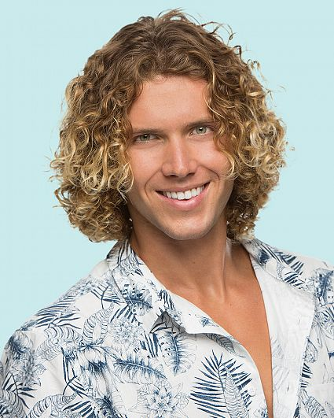

My Top Ten Houseguests
10.) Brett Robinson
Name: Brett Robinson
Season(s) Participated: 20
Placed: 6th
Age: 28
Born: January 15th, 1993
Hometown: Oakdale, Conneticut
Occupation: Cybersecurity Engineer
Brett Robinson placed in 6th on season 20 and was the comic relief of the house sense the beginning of the season. He is number 10 because of his comedic and alpha personality. I had a lot of fun watching him start drama in the house making the other side angry that they were being outwitted by him.
9.) Tyler Crispen
Name: Tyler Crispen
Season(s) Participated: 20, 22
Placed: 2nd, 6th
Age: 26
Born: Feburary 17th, 1995
Hometown: Hilton Head Island, South Carolina
Occupation: Entreprenuer & Social Media Influencer
Tyler Crispen was on season 20 and returned in season 22. Tyler is placed number 9 because of his fun and outgoing personality as well as his gameplay. I loved watching him play both sides in season 20 and I also loved the big moves he tried to attempt in season 22.
8.) Haleigh Broucher
Name: Haleigh Broucher
Season(s) Participated: 20
Placed: 7th
Age: 24
Born: January 23rd, 1997
Hometown: Village Mills, Texas
Occupation: College Student
Haleigh Broucher barley passes tyler as my favorite houseguest for season 20. She is placed one above tyler because of her underdog status. I genuinly wanted to see her beat the odds and take the season by storm and because of that she is my number 8.
7.) Frank Eudy

Name: Frank Eudy
Season(s) Participated: 14, 18
Placed: 7th, 12th
Age: 37
Born: April 24th, 1984
Hometown: Naples, Florida
Occupation: Pharmaceutical Sales Rep
Frank Eudy is from big brother 14 and 18. He places number 7 on my list because "Chilltown" is my all time favorite alliance in history and frank is the third and final member of that alliance. Along with being the underdog of both seasons he played in, Fank is placed in my number 7 spot.
6.) Mike "Boogie" Malin
Name: Mike "Boogie" Malin
Season(s) Participated: 2, 7, 14
Placed: 8th, 1st, 10th
Age: 50
Born: July 16th, 1970
Hometown: Los Angeles, California
Occupation: Bar Owner
Mike "Boogie" Malin was on seasons 2, 7, and 14 and the second member of "Chilltown". The game Mike played in season 7 was amazing and watching him on screen is very entertaining no matter the season. His manipulitive game play pulls you in and you start to understand why Mike has a large ego. He is very good at the game and that is why he has my number 6 spot
5.) Zach Rance
Name: Zach Rance
Season(s) Participated: 16
Placed: 9th
Age: 30
Born: September 9th, 1990
Hometown: Palm Beach Gardens, Florida
Occupation: Entreprenuer
Zach Rance appears on season 16 and he is one of the most fun houseguests to watch. He stirs up so much drama and he is the most outgoing player I have seen in the game in the 25 seasons I have watched. Him alone makes me rewatch season 16 numerous times just to see him mess around. Zach's outgoing personality and his over the top aura is why he is my number 5 favorite player.
4.) Janelle Pierzina
Name: Janelle Pierzina
Season(s) Participated: 6, 7, 14, 22
Placed: 3rd, 3rd, 12th, 14th
Age: 41
Born: January 10th, 1980
Hometown: Minneapolis, Minnesota
Occupation: Real Estate Agent
Janelle has played on seasons 6, 7, 14, and 22. She has the record of most seasons played by a houseguest for a reason. She is outgoing, smart, and plays the underdog in all of the seasons she appears in. If Janelle is on a season, most of the fan base automatically roots for her to win the game. She is very good at the game and in recent seasons it makes her a threat becuase she is so good. She is a competition beast and I love to watch her kick everyons butt and come out on top. Janelle has my number 4 spot because she is my favorite player to not win a season.
3.) Derrick Levasseur

Name: Derrick Levasseur
Season(s) Participated: 16
Placed: 1st
Age: 37
Born: February 3rd, 1984
Hometown: Providence, Rhode Island
Occupation: Cop, TV Personality, & Writer
Derrick Levasseur played in season 16 and played one of the best games to date. He manipulated everyone into taking eachother out until he was the last one standing. He stayed low and did not get his hands dirty unless he needed to. Derricks being a mastermind and zach being super outgoing made the season for me. after Zach was evicted I strictly relied on Derrick to enjoy the show and he never lets me down in the second half of the season. Watching him manipulate everyone is very entertaining and is why he is in my number 3 spot.
2.) Dan Gheesling
Name: Dan Gheesling
Season(s) Participated: 10, 14
Placed: 1st, 2nd
Age: 37
Born: September 1st, 1983
Hometown: Dearborn, Michigan
Occupation: Teacher
Dan Gheesling played on seasons 10 and 14. He holds the record of best place placing in 1st and 2nd respectivly. He steamrolls everyone in the seasons he plays in. Dan out wits everyone on multiple occations and has pulled off the craziest theatrics anyone has seen on the show and gotten away with it. Dan's funeral is debated as the best move in big brother history. Nomination roulette is also in that top ten list of best moves. Even Shane's blindside in the top four makes the list. Dan is so good at the game he created a word for manipulating people in a certin way, "The Mist". Watching Dan play is very entertaining because you get to see peoples heads spinning in confussion as Dan casually walks to the finals which is why he is my second favorite player.
1.) Dr. Will Kirby
Name: Dr. Will Kirby
Season(s) Participated: 2, 7
Placed: 1st, 4th
Age: 48
Born: January 2nd, 1973
Hometown: Maimi, Florida
Occupation: Physician
Dr. Will Kirby... Where do I start? He played the game in seasons 2 and 7 and is refered to by many (including himself) as the best big brother player of all time. In season 2 Dr. Will really showed everyone how to play the game pulling off the underdog story with his manipulations and winning the season. Then he makes his triumphant return in season 7 and blows everyone out of the water with Mike in their alliance "Chilltown"."Chilltown" walked to the final four and Wills evicions is what pushed Mike to win season 7. His cocky atitude is fun to watch in both seasons becuase it immediatly puts a target on his back and you get to watch him slowly creep his way back up to the top by manipulating everyone to turn against eachother until the end. His charisma traps many into his trap as he sends them out the door without blinking an eye. Will is my favorite player of all time because he makes good TV. He is fun to watch and it is even better when he is the best player of all time.